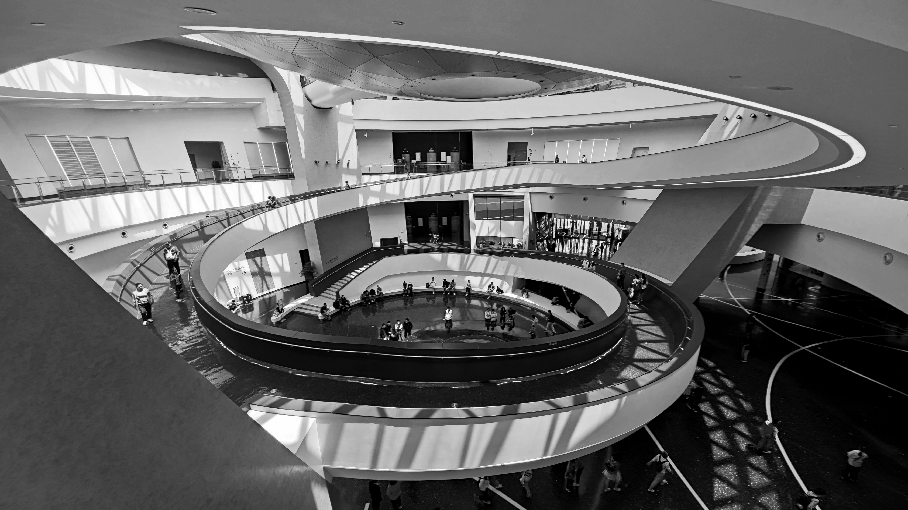

张量在计算机，理工科和数学专业中的内涵和应用方式各不相同， 数学上的张量十分复杂且难以理解，这里记录了我尝试用“意会”的方式初步理解张量的一些思考。 在应用端，很多时候确实不需要懂得每一个细节和原理。当初步“接纳”了某个概念后， 在后续的使用中，或许就会慢慢懂得背后的知识。 这里重点是区分维度和阶数，Sketchup在这方面竟然意外好用。
（施工中）
（后续可能会重做功能，增加单篇文章的链接）
本网站存档照片与底图都源于日常摄影
图片排版功能仍在设计中，下方图片为测试用
北京大兴国际机场
Beijing Daxing International Airport
哈尔滨大剧院
Harbin Grand Theatre
上海天文馆
Shanghai Astronomy Museum
纪念碑大厦，伦敦
The Monument Building
泰特英國美術館，伦敦
Tate Britain
苏格兰国立博物馆，爱丁堡
National Museum of Scotland